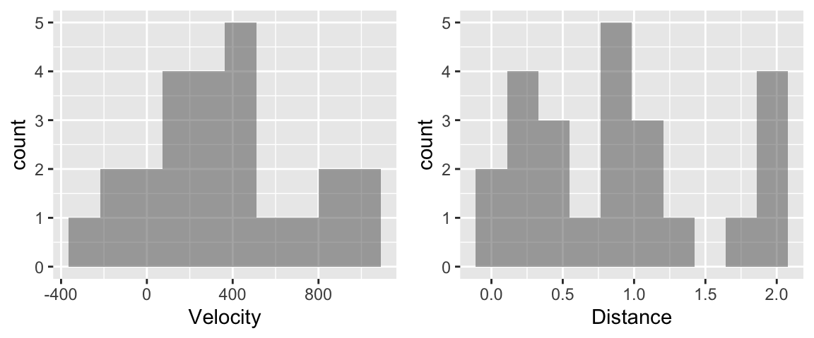
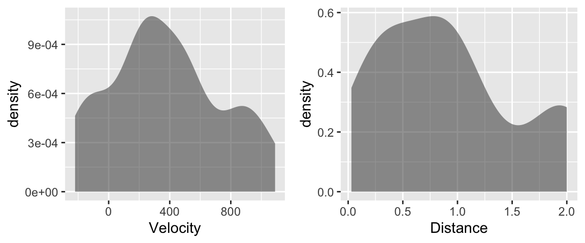
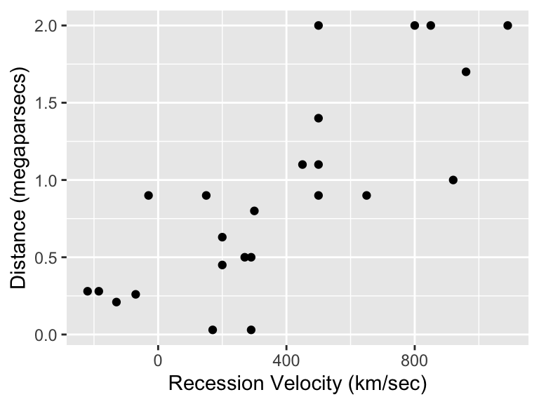
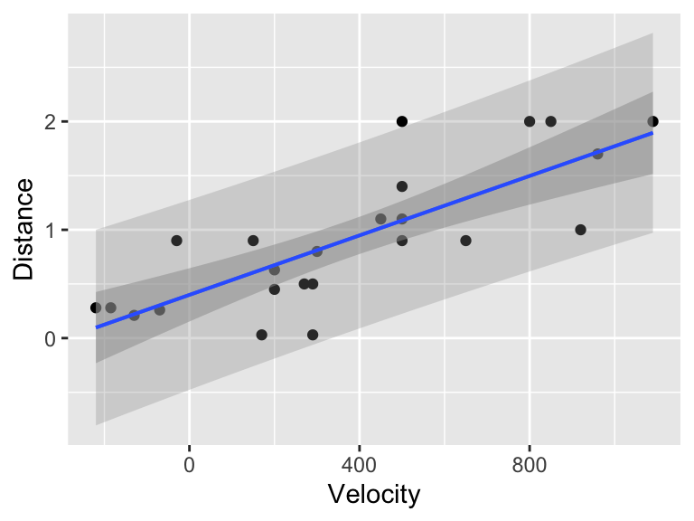
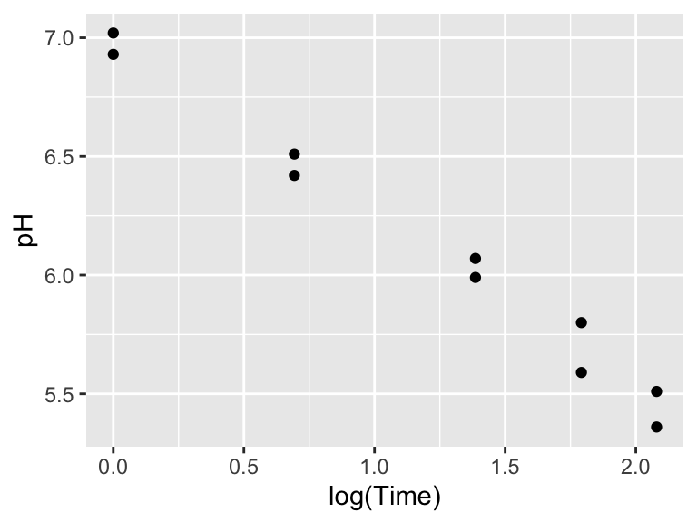
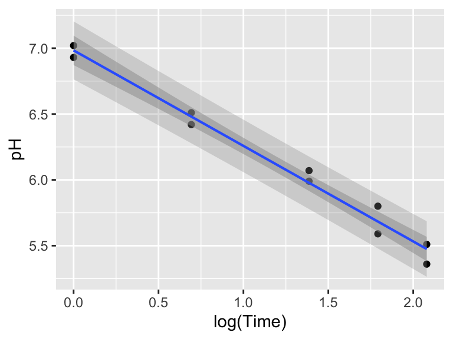

library(ggformula) # graphics
library(Sleuth3) # Sleuth data sets
library(broom) # extract pieces of lm output
library(gridExtra) # arrange multiple plots on a page3 Simple Linear Regression: A Model for the Mean
In this chapter we need to load the following packages (remember, you will need to install packages you have never used before if you are using your own computer).
We will also set some options to improve legibility of graphs and output.
options(digits=4) # display four significant digits by default4 The Big Bang
Is there relation between distance and radial velocity among extra-galactic nebulae? This is the question addressed in case study 7.1 in the Sleuth.
4.1 Summary statistics and graphical display
We begin by reading the data (which is done when you loaded the Sleuth3 package) and summarizing the variables.
summary(case0701) Velocity Distance
Min. :-220 Min. :0.030
1st Qu.: 165 1st Qu.:0.407
Median : 295 Median :0.900
Mean : 373 Mean :0.911
3rd Qu.: 538 3rd Qu.:1.175
Max. :1090 Max. :2.000 A total of 24 nebulae are included in this data set.
hist1 <- gf_histogram(~Velocity, data = case0701, bins = 10)
hist2 <- gf_histogram(~Distance, data = case0701, bins = 10)
grid.arrange(hist1, hist2, ncol = 2)
The histograms are somewhat hard to interpret with the small sample sizes. I am hesitant to call the distribution of velocity multimodal. In such situations, density plots can help clarify the shape of the distribution, since their interpretation does not rely on the number of bins.
d1 <- gf_density(~Velocity, data = case0701, bins = 10)
d2 <- gf_density(~Distance, data = case0701, bins = 10)
grid.arrange(d1, d2, ncol = 2)
The density plots show that the distributions for the two variables are fairly symmetric, but more uniform than normally distributed.
gf_point(Distance ~ Velocity, data= case0701) +
xlab("Recession Velocity (km/sec)") +
ylab("Distance (megaparsecs)")
The scatterplot is displayed on page 177 of the Sleuth. It indicates that there is a fairly strong, linear relationship between distance and velocity.
4.2 The simple linear regression model
The following code presents the results interpreted on page 186 of the Sleuth.
mod1 <- lm(Distance ~ Velocity, data = case0701)
summary(mod1)
Call:
lm(formula = Distance ~ Velocity, data = case0701)
Residuals:
Min 1Q Median 3Q Max
-0.7672 -0.2352 -0.0108 0.2108 0.9146
Coefficients:
Estimate Std. Error t value Pr(>|t|)
(Intercept) 0.399170 0.118666 3.36 0.0028 **
Velocity 0.001372 0.000228 6.02 4.6e-06 ***
---
Signif. codes: 0 '***' 0.001 '**' 0.01 '*' 0.05 '.' 0.1 ' ' 1
Residual standard error: 0.406 on 22 degrees of freedom
Multiple R-squared: 0.623, Adjusted R-squared: 0.605
F-statistic: 36.3 on 1 and 22 DF, p-value: 4.61e-06The estimated parameter for the intercept is 0.3992 megaparsecs and the estimated parameter for velocity is 0.0014 megaparsecs/(km/sec). The estimated mean function is \(\hat{mu} (\text{distance}|\text{velocity}) = 0.3992 + 0.0014 (\text{velocity})\). The estimate of the residual standard error is 0.4056 megaparsecs with 22 degrees of freedom. These results are also presented by Display 7.9 (page 187).
Display 7.8 (page 186) shows the list of fitted values and residuals for this model. We can easily obtain these using the augment function in the broom package (these are in the .fitted column).
bang_augmented <- augment(mod1)
bang_augmented# A tibble: 24 × 8
Distance Velocity .fitted .resid .hat .sigma .cooksd .std.resid
<dbl> <int> <dbl> <dbl> <dbl> <dbl> <dbl> <dbl>
1 0.03 170 0.632 -0.602 0.0547 0.393 0.0675 -1.53
2 0.03 290 0.797 -0.767 0.0438 0.378 0.0858 -1.93
3 0.21 -130 0.221 -0.0108 0.122 0.415 0.0000554 -0.0283
4 0.26 -70 0.303 -0.0431 0.104 0.415 0.000728 -0.112
5 0.28 -185 0.145 0.135 0.140 0.414 0.0104 0.358
6 0.28 -220 0.0972 0.183 0.153 0.413 0.0216 0.489
7 0.45 200 0.674 -0.224 0.0511 0.412 0.00863 -0.566
8 0.5 290 0.797 -0.297 0.0438 0.410 0.0129 -0.749
9 0.5 270 0.770 -0.270 0.0450 0.411 0.0109 -0.680
10 0.63 200 0.674 -0.0437 0.0511 0.415 0.000329 -0.110
# ℹ 14 more rowsAlternatively, you can extract the fitted values using the fitted function and the residuals using the resid function:
fitted(mod1) 1 2 3 4 5 6 7 8 9 10 11
0.63248 0.79717 0.22076 0.30310 0.14528 0.09724 0.67365 0.79717 0.76972 0.67365 0.81089
12 13 14 15 16 17 18 19 20 21 22
0.35800 1.29124 0.60503 1.08537 1.66179 1.01675 1.08537 1.08537 1.71668 1.08537 1.56572
23 24
1.49710 1.89509 resid(mod1) 1 2 3 4 5 6 7 8 9 10
-0.60248 -0.76717 -0.01076 -0.04310 0.13472 0.18276 -0.22365 -0.29717 -0.26972 -0.04365
11 12 13 14 15 16 17 18 19 20
-0.01089 0.54200 -0.39124 0.29497 -0.18537 -0.66179 0.08325 0.01463 0.31463 -0.01668
21 22 23 24
0.91463 0.43428 0.50290 0.10491 The sum of the squared residuals is 3.62 and R-squared is 0.6062.
sum(resid(mod1)^2)[1] 3.62sum(resid(mod1)^2) / sum((fitted(mod1) - mean(case0701$Distance))^2)[1] 0.6062We can also display 95% confidence bands for the model line and the predicted values, the following graph is akin to Display 7.11 (page 191).
gf_point(Distance ~ Velocity, data = case0701) %>%
gf_lm(interval = "prediction") %>%
gf_lm(interval = "confidence", alpha = 0.5) Warning: Using the `size` aesthetic with geom_ribbon was deprecated in ggplot2 3.4.0.
ℹ Please use the `linewidth` aesthetic instead.Warning: Using the `size` aesthetic with geom_line was deprecated in ggplot2 3.4.0.
ℹ Please use the `linewidth` aesthetic instead.
4.3 Inferential Tools
First, we test \(\beta_0\) (the intercept). From the previous summary, we know that the two-sided p-value for the intercept is 0.0028. This p-value is small enough for us to reject the null hypothesis that the estimated parameter for the intercept equals 0 (page 188).
Next, we want to examine \(\beta_1\). The current \(\beta_1\) for \(\hat{\mu}(Y|X) = \beta_0 + \beta_1 X\) is 0.0014, and we want to get the \(\beta_1\) for \(\hat{\mu}(Y|X) = \beta_1 X\), a model with no intercept (page 188)
# linear regression with no intercept
mod2 <- lm(Distance ~ Velocity - 1, data = case0701)
summary(mod2)
Call:
lm(formula = Distance ~ Velocity - 1, data = case0701)
Residuals:
Min 1Q Median 3Q Max
-0.7677 -0.0691 0.2295 0.4606 1.0393
Coefficients:
Estimate Std. Error t value Pr(>|t|)
Velocity 0.001921 0.000191 10 7e-10 ***
---
Signif. codes: 0 '***' 0.001 '**' 0.01 '*' 0.05 '.' 0.1 ' ' 1
Residual standard error: 0.488 on 23 degrees of freedom
Multiple R-squared: 0.814, Adjusted R-squared: 0.806
F-statistic: 101 on 1 and 23 DF, p-value: 7.05e-10confint(mod2) 2.5 % 97.5 %
Velocity 0.001526 0.002317Without the intercept, the new estimate for \(\beta_1\) is 0.0019 megaparsec-second/km. The standard error is \(1.91 \times 10^{-4}\) megaparsecs with 23 degrees of freedom. The 95% confidence interval is (0.0015, 0.0023). Because 1 megaparsec-second/km = 979.8 billion years, the confidence interval could be written as 1.49 to 2.27 billion years, and the best estimate is 1.88 billion years (page 188).
5 Meat Processing and pH
Is there a relationship between postmortem muscle pH and time after slaughter? This is the question addressed in case study 7.2 in the Sleuth.
5.1 Summary statistics and graphical display
We begin by loading the data and summarizing the variables.
summary(case0702) Time pH
Min. :1.0 Min. :5.36
1st Qu.:2.0 1st Qu.:5.64
Median :4.0 Median :6.03
Mean :4.2 Mean :6.12
3rd Qu.:6.0 3rd Qu.:6.49
Max. :8.0 Max. :7.02 A total of 10 steer carcasses are included in this data as shown in Display 7.3, page 179.
gf_point(pH ~ log(Time), data = case0702)
The above scatterplot indicates a negative linear relationship between pH and log(Time).
5.2 The simple linear regression model
We fit a simple linear regression model of pH on log(time) after slaughter. The estimated mean function will be \(\hat{\mu} = (\text{pH}|\text{logtime}) = \beta_0 + \beta_1 \log(\text{Time})\).
mod3 <- lm(pH ~ log(Time), data = case0702)
summary(mod3)
Call:
lm(formula = pH ~ log(Time), data = case0702)
Residuals:
Min 1Q Median 3Q Max
-0.1147 -0.0589 0.0209 0.0361 0.1166
Coefficients:
Estimate Std. Error t value Pr(>|t|)
(Intercept) 6.9836 0.0485 143.9 6.1e-15 ***
log(Time) -0.7257 0.0344 -21.1 2.7e-08 ***
---
Signif. codes: 0 '***' 0.001 '**' 0.01 '*' 0.05 '.' 0.1 ' ' 1
Residual standard error: 0.0823 on 8 degrees of freedom
Multiple R-squared: 0.982, Adjusted R-squared: 0.98
F-statistic: 444 on 1 and 8 DF, p-value: 2.7e-08coef(mod3)(Intercept) log(Time)
6.9836 -0.7257 \(\hat{\beta}_0 = 6.9836\), \(\hat{\beta}_1 = -0.7257\), and \(\hat{\sigma} = 0.0823\). (See page 189.)
5.3 Inferential Tools
With the previous information, we can calculate the 95% confidence interval for the estimated mean pH of steers 4 hours after slaughter (Display 7.10, page 189):
beta0 <- coef(mod3)[1]
beta1 <- coef(mod3)[2]
mu <- beta0 + beta1 * log(4)
n <- nrow(case0702)
sigma_hat <- sigma(mod3)
meanx <- mean(log(case0702$Time))
sdx <- sd(log(case0702$Time))
se <- sigma_hat * sqrt(1/n + (log(4) - meanx)^2/((n - 1) * sdx))
se[1] 0.0267upper <- mu + qt(0.975, df = 8) * se
upper(Intercept)
6.039 lower <- mu - qt(0.975, df = 8) * se
lower(Intercept)
5.916 Or we can use the following code to get the same result:
predict(mod3, newdata = data.frame(Time = 4), interval = "confidence") fit lwr upr
1 5.978 5.916 6.04So the 95% confidence interval for estimated mean is (5.92, 6.04).
Next, we can calculate the 95% prediction interval for a steer carcass 4 hours after slaughter (Display 7.12, page 193):
pred <- beta0 + beta1 * log(4)
pred(Intercept)
5.978 pred_se <- sigma_hat * sqrt(1 + 1/n + (log(4) - meanx)^2/((n - 1) * sdx))
pred_se[1] 0.08648pred_upper <- pred + qt(0.975, df = 8) * pred_se
pred_upper(Intercept)
6.177 pred_lower <- pred - qt(0.975, df = 8) * pred_se
pred_lower(Intercept)
5.778 Or we can use the following code to get the 95% prediction interval for a steer carcass 4 hours after slaughter:
predict(mod3, newdata = data.frame(Time = 4), interval = "prediction") fit lwr upr
1 5.978 5.778 6.177So the 95% prediction interval is (5.78, 6.18).
The 95% prediction band is presented as Display 7.4 (page 180):
gf_point(pH ~ log(Time), data = case0702) %>%
gf_lm(interval = "prediction") %>%
gf_lm(interval = "confidence", alpha = 0.5)